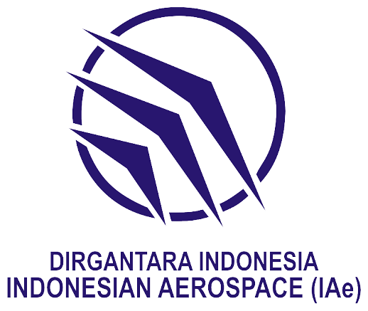
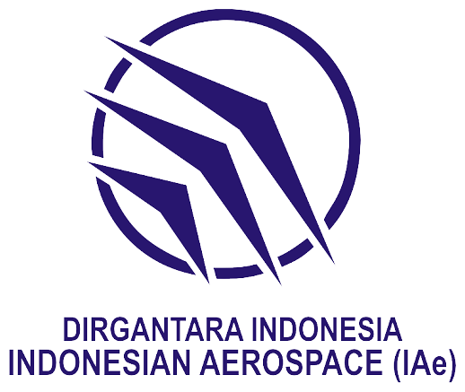

Teknik Permesinan (TPM)
Tentang TPM
Teknik Mesin merupakan kompetensi keahlian pada rumpun program keahlian teknik mesin bidang keahlian teknologi rekayasa yang melaksanakan program pendidikan dan pelatihan memproduksi produk-produk teknik berupa komponen-komponen mesin, komponen otomotif maupun peralatan lainnya menggunakan mesin-mesin produksi.
Teknik Pemesinan SMK Negeri 1 Subang terbentuk pada tanggal 22 Mei 2015 berdasarkan Surat Keputusan Kepala Dinas Pendidikan Kabupaten Subang tentang Pemberian Izin Program Kompetensi Keahlian Teknik Pemesinan SMK Negeri 1 Subang, dengan Nomor SK : 421.2 / 60 – Disdik, Tanggal SK : 22 Mei 2015.
Materi yang Dipelajari
- Teknik Dasar Pemesinan
- Penggunaan Mesin Bubut, Milling, dan CNC
- Pengelasan dan Fabrikasi
- Metrologi dan Pengukuran Teknik
- Gambar Teknik dan CAD
- Perawatan dan Perbaikan Mesin
- Material Teknik
- Keselamatan dan Kesehatan Kerja (K3)
Prospek Karir Teknik Permesinan
- Teknisi Otomotif
- Montir Kendaraan
- Spesialis Diagnostik Mesin
- Teknisi Kendaraan Listrik
- Quality Control di Industri Otomotif
- Service Advisor
- Instruktur Teknik Otomotif
- Entrepreneur (Bengkel dan Spare Part)
Institusi Pasangan

 
